Qué es la F1 🏁
Como la máxima categoría internacional de monoplazas, la Fórmula 1 es la cumbre del automovilismo y la competición automovilística más prestigiosa del mundo.
Es un deporte de equipo (hay que serlo para cambiar las cuatro ruedas de un coche en menos de dos segundos). Los pilotos afrontan fuerzas G extremas, toman decisiones en milisegundos y alcanzan velocidades de más de 370 km/h (230 mph).
Los pilotos compiten por el Campeonato Mundial de Pilotos, mientras que los equipos luchan por el Campeonato de Constructores y premios económicos. Cada carrera se conoce como Gran Premio y se celebra en circuitos icónicos por todo el mundo.
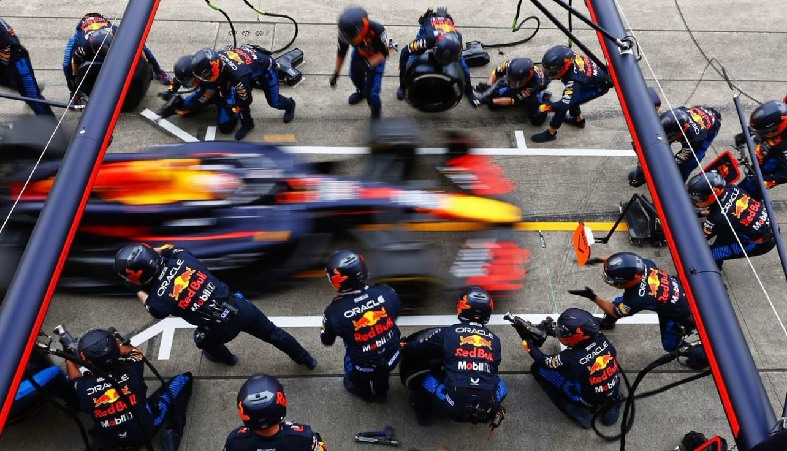
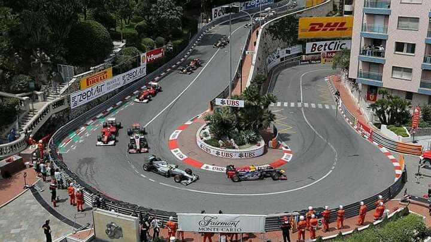
Historia de la F1 🏁
La Fórmula 1 se creó como una competición de Campeonato Mundial en 1950, y la primera carrera se celebró en el Circuito de Silverstone (una antigua estación de la Royal Air Force) en el Reino Unido el 13 de mayo de ese año.
Se celebraron seis eventos más en una temporada en la que el piloto de Alfa Romeo, Giuseppe "Nino" Farina, se convirtió en el primer campeón mundial de este deporte, superando a sus compañeros de equipo Juan Manuel Fangio y Luigi Fagioli.
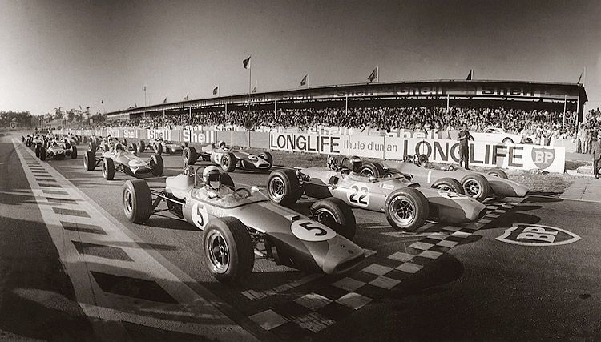
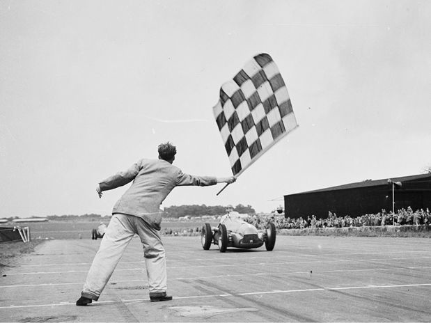
Equipos F1
¿Cuántos pilotos y equipos compiten en la F1?
Un total de 10 equipos y 20 pilotos de todo el mundo conforman la actual parrilla de Fórmula 1. Cada equipo presenta dos coches. En lo que respecta a los equipos, hay aquellos que han estado en la Fórmula 1 desde los primeros años, como Ferrari (compitiendo continuamente desde la primera temporada en 1950) y McLaren , y recién llegados relativos como Haas , que ingresaron al deporte antes de la temporada 2016.


Pilotos Temporada 2025
La experiencia de los pilotos varía desde múltiples campeones mundiales como Lewis Hamilton , Max Verstappen y Fernando Alonso , hasta corredores novatos en sus primeras temporadas completas de F1, como Kimi Antonelli , Oliver Bearman y Gabriel Bortoleto .

Max Verstappen 3 veces campeón mundial. Piloto de Red Bull Racing.
Países Bajos – Red Bull Racing. Campeón dominante desde 2021.

Yuki Tsunoda Piloto japonés de Red Bull (ex AlphaTauri). Rápido y consistente.
Japón – Red Bull (ex AlphaTauri). En desarrollo sólido.

Lewis Hamilton 7 veces campeón del mundo. Ahora con Ferrari.
Reino Unido – Ferrari. Busca cerrar su carrera con el equipo legendario.

Charles Leclerc Piloto monegasco de Ferrari. Especialista en clasificaciones.
Mónaco – Ferrari. Rápido a una vuelta, busca consolidarse campeón.

Lando Norris Británico, piloto estrella de McLaren. Muy popular y constante.
Reino Unido – McLaren. Talento joven con gran popularidad.

Oscar Piastri Australiano, futuro campeón según expertos. Piloto de McLaren.
Australia – McLaren. Rápido y preciso, futura estrella.

George Russell Piloto británico, líder de Mercedes tras Hamilton.
Reino Unido – Mercedes. Asume liderazgo tras salida de Hamilton.

Kimi Antonelli Joven promesa italiana, hijo de Marco Antonelli.
Bolonia, Italia – Hijo del piloto de autos deportivos Marco Antonelli.

Alexander Albon Piloto tailandés, regreso sólido a la parrilla.
Tailandia – Piloto talentoso con gran historia en la F1.

Carlos Sainz Español, consistente y competitivo, ex Ferrari.
España – Piloto fuerte, rápido y confiable.

Pierre Gasly Francés, ganador de carrera, piloto de Alpine.
Francia – Alpine. Talento con victoria, en consolidación.

Franco Colapinto Joven talento argentino, nuevo piloto Alpine.
Australia – Alpine. Promovido piloto titular en 2025.

Fernando Alonso El veterano de la F1, bicampeón mundial. Aston Martin.
España – Aston Martin. El más experimentado y ambicioso.

Lance Stroll Canadiense, piloto de Aston Martin.
Canadá – Aston Martin. Busca regularidad en su rendimiento.

Esteban Ocon Francés, nuevo piloto Mercedes. Talento probado.
Francia – Mercedes. Nuevo en el equipo, busca demostrar su valor.

Oliver Bearman Británico, joven promesa de Ferrari, debutó en 2024.
Reino Unido – Haas. Promesa de Ferrari, debutó en 2024.

Liam Lawson Neozelandés, piloto reserva Red Bull, fuerte potencial.
Nueva Zelanda – Piloto reserva Red Bull con gran talento.

Isaac Hadjar Francés, piloto de Stake F1 (Sauber), proyección hacia Audi.
Finlandia – Stake F1 (Sauber). Líder del equipo hacia Audi.

Gabriel Bartoletó Brasileño, debutante, esperanza nacional para la F1.
Brasil – Debut en F1 y esperanza nacional.

Nico Hülkenberg Alemán, veterano de la parrilla, conocido por su experiencia.
Alemania – Piloto con talento pero sin equipo elite.
Pistas Legendarias de la F1
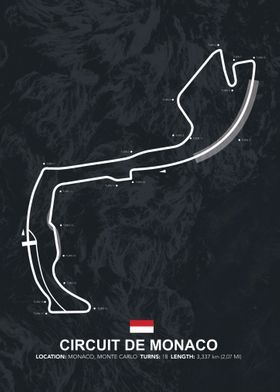
Monte Carlo (Mónaco)
La joya de la corona de la F1, Mónaco es un circuito urbano que exige la máxima precisión y habilidad de los pilotos debido a sus estrechas calles y barreras.
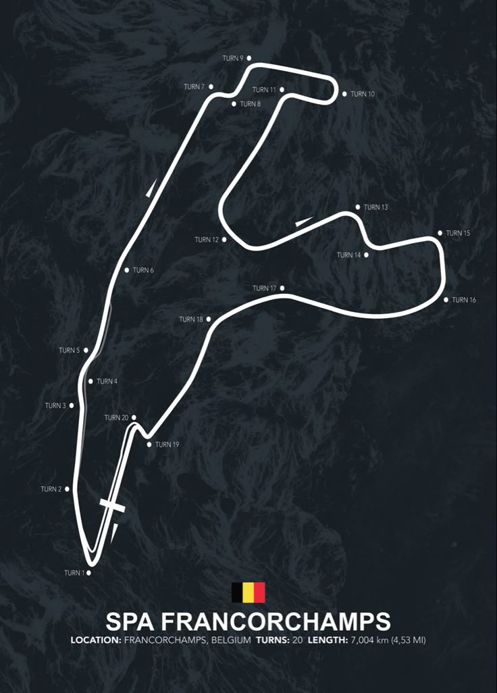
Spa-Francorchamps (Bélgica)
Un circuito largo y desafiante con múltiples climas dentro de la misma carrera, famoso por sus curvas rápidas y la icónica Eau Rouge.
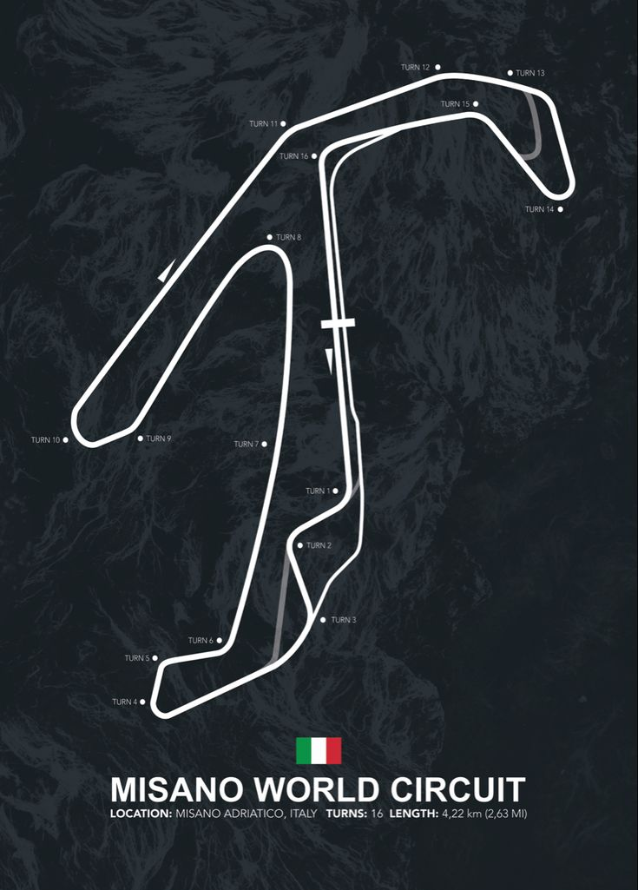
Misano (Italia)
La pista se conoce oficialmente como misano world circuit Marco Simoncelli, en honor al fallecido piloto nacido en Cattolica mientras que antes de 2006 se llamaba Circuito internazionale Santa Monica.
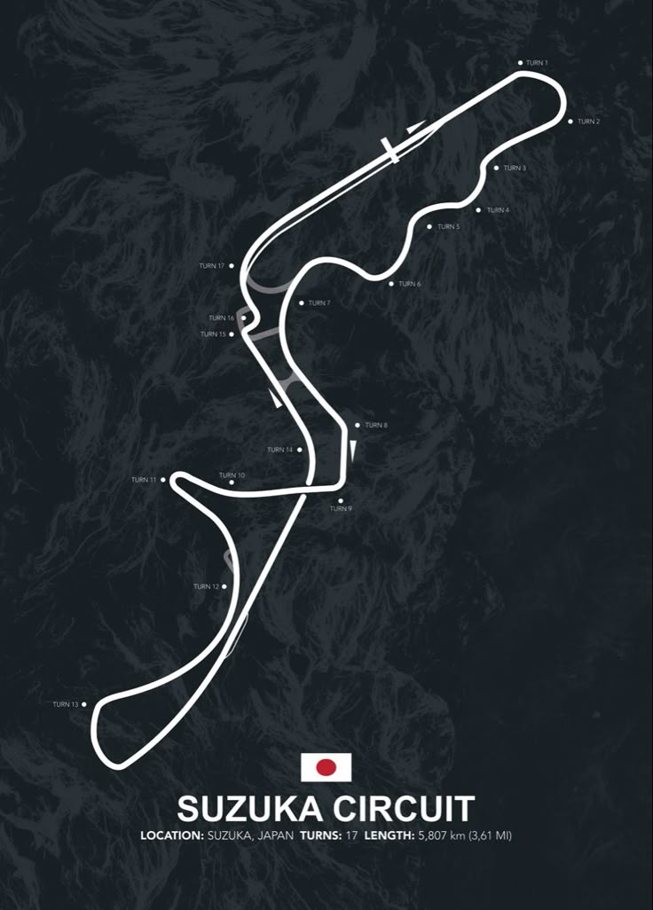
Suzuka (Japón)
El único circuito en forma de 8, técnico y muy querido.
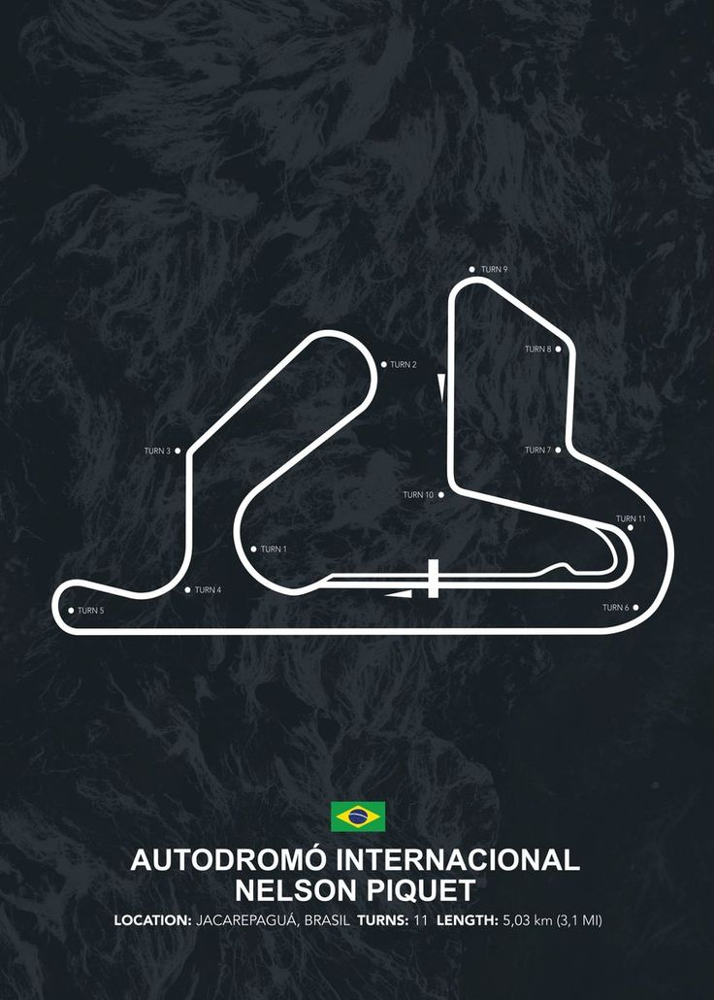
Nelson Piquet (Brasil)
Circuito de Nelson Piquet, conocido por su alta velocidad y su alta calidad de pista.
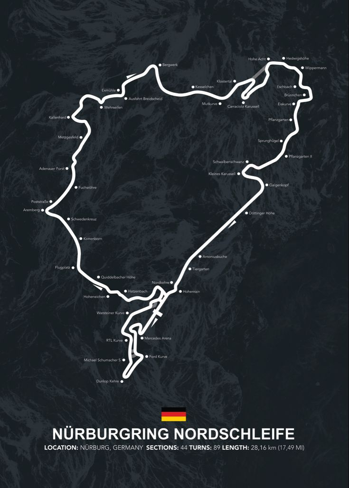
Nürburgring (Alemania)
El circuito consta de dos secciones: el Nordschleife (circuito norte) y el circuito moderno de Fórmula 1. El Nordschleife, conocido como "Infierno Verde", es famoso por su longitud y dificultad, mientras que el circuito de Fórmula 1 es un trazado más corto y seguro
Galería
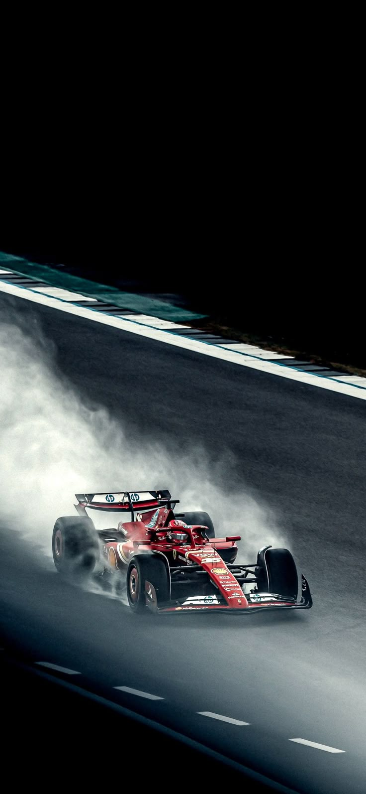
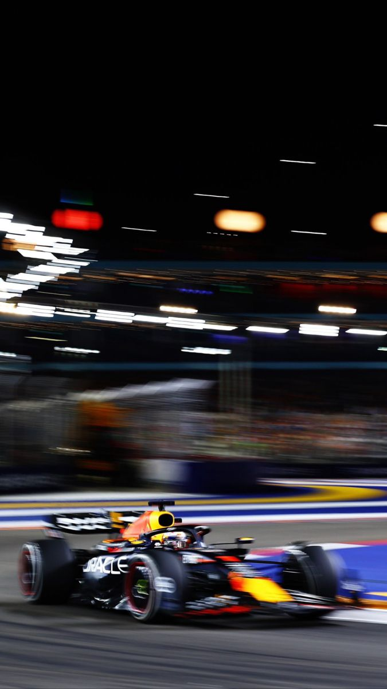
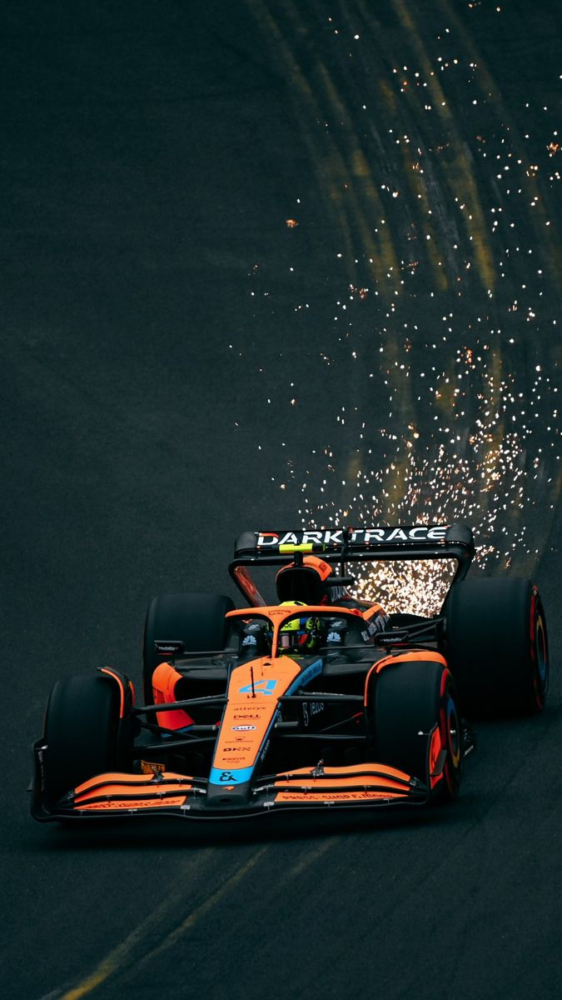
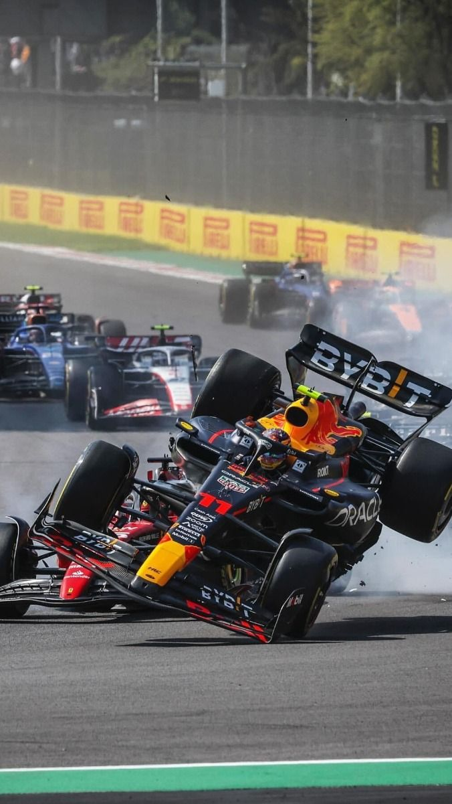
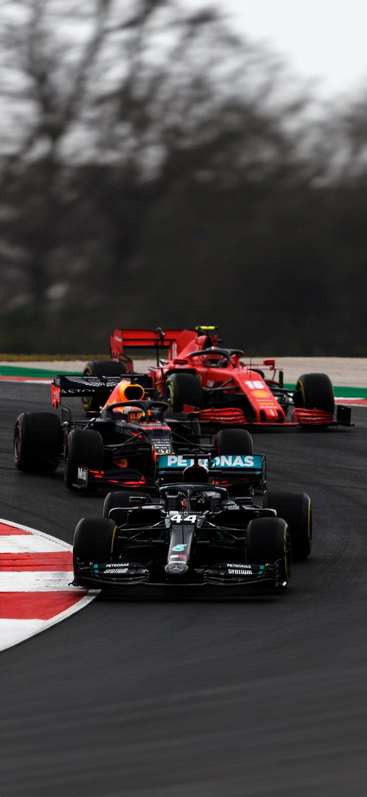
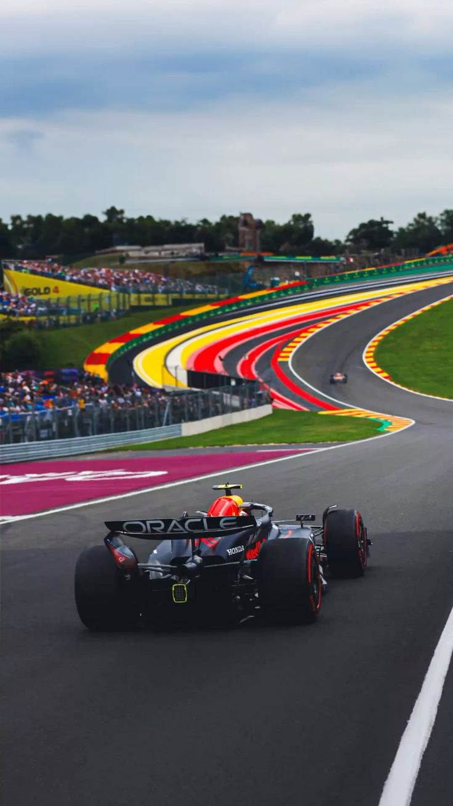
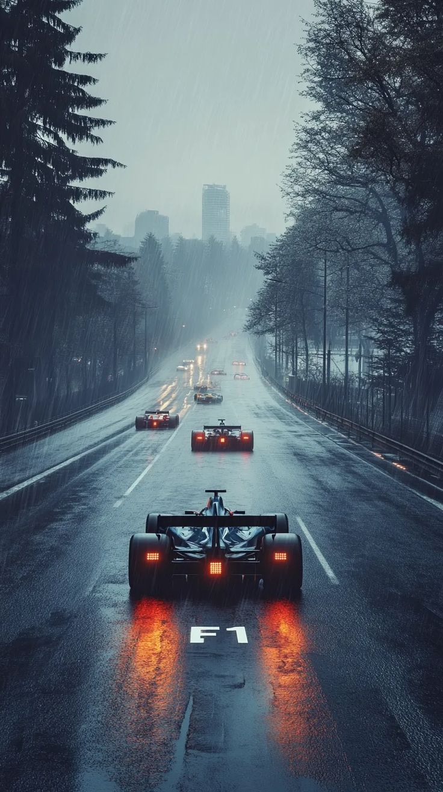